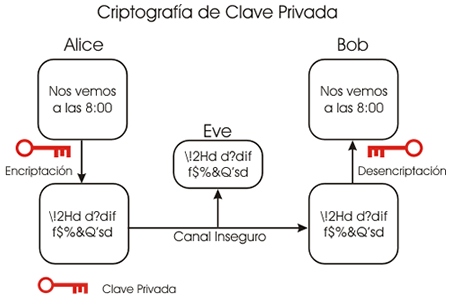
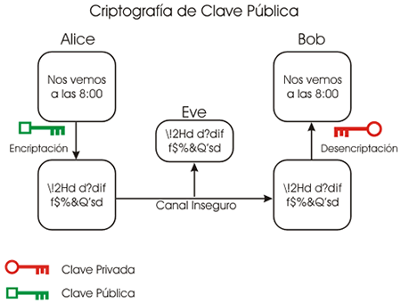
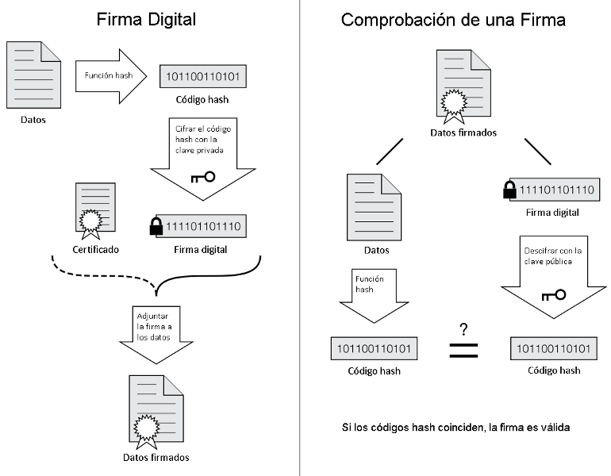
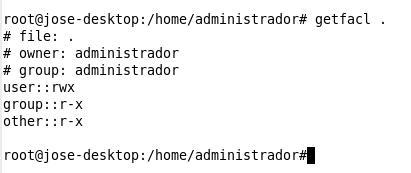
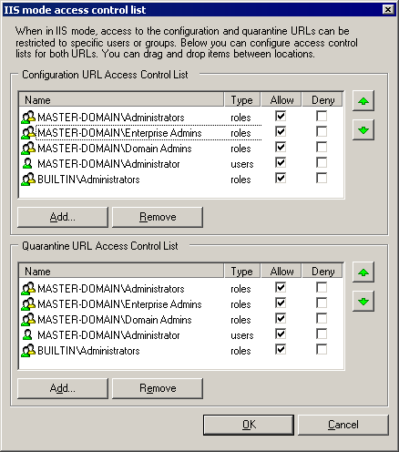
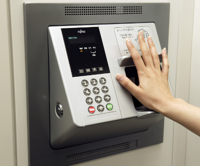

Universidad Nacional Experimental Del Táchira
Decanato De Docencia
Dpto. Ingeniería en Informática
Seguridad Informática
Código 0435607T
Introducción
- Introducción
- Entorno de seguridad
- Fundamentos de criptografía
- Mecanismos de protección
- Autenticación
- Ataques
- Defensas
Introducción
- Tanto las empresas como los usuarios del hogar tienen datos importantes en sus equipos.
- Con las nuevas aplicaciones es necesario preocuparse por la protección de los sistemas computacionales.
- En sistemas multiusuario es necesario diferenciar y proteger los datos de cada uno de los usuarios del sistema.
Introducción
- Se aplican clasificaciones de usuarios según sus funciones y características. Grupos y ACL.
- Con las comunicaciones aparecieron las amenazas externas. Interconectan usuarios alrededor del mundo, no todos bien intencionados.
Entorno de seguridad
- Protección: mecanismo que permite controlar el acceso a los programas, procesos o usuarios definidos en el sistema informático.
- Seguridad: define el uso predefinido de los recursos y el acceso previsto de un sistema informático, ya sea local o a través de redes de datos.
Entorno de seguridad
- Amenazas: Desde la perspectiva de seguridad existen 4 objetivos fundamentales a cumplir, así como sus amenazas fundamentales:
| Objetivo | Amenaza |
|---|---|
| Confidencialidad de los datos | Exposición de los datos |
| Integridad de los datos | Alteración de los datos |
| Disponibilidad del sistema | Denegación del servicio |
| Exclusión de usuarios externos | Los virus se apropian del sistema |
Amenazas
Confidencialidad de los datos
- Garantizar que los usuarios secretos permanezcan de esa manera.
- Permitir que sólo los usuarios autorizados tengan acceso a los datos que se le han permitido.
- El usuario debe ser capaz de otorgar los permisos según sea requerido.
Amenazas
Integridad de los datos
- Lo usuarios no autorizados no deben ser capaces de modificar datos sin el permiso del propietario.
- Incluye la eliminación e inclusión de datos falsos.
- Se debe garantizar esa condición para que el sistema sea confiable.
Amenazas
Disponibilidad de los datos
- Nadie puede perturbar el sistema para hacerlo inutilizable.
- Un ataque muy común en este aspecto son los DoS (Denial of Service, Denegación de servicio). Difíciles de controlar, y mas difíciles aun son los DDoS.
Amenazas
Privacidad
- Proteger a los individuos sobre el mal uso de la información sobre ellos.
- Existen marcos legales que permiten acceder a información privada de los usuarios.
- ¿Hasta donde llega la privacidad entonces?
Amenazas
Intrusos
- Se refiere a personas que “husmean” en lugares donde no tienen permitido hacerlo normalmente.
-
Pueden actuar de dos formas:
- Intrusos pasivos: los que solo quieren ver información no autorizada.
- Intrusos activos: Ven información no autorizada y la modifican.
Amenazas
Intrusos
-
Algunas categorías comunes:
- Usuarios no técnicos que se entrometen de forma casual. Ej: Explorar los recursos compartidos de una red.
- Intrusos que husmean. Son usuarios con ciertas habilidades que consideran como un reto personal irrumpir en un sistema informático local para obtener información.
Amenazas
Intrusos
-
Algunas categorías comunes:
- Intentos determinados para obtener dinero. Ej: quedarse con pequeñas cantidades de dinero, desviar cuentas que tengan años sin movimientos, chantaje, extorsión.
- Espionaje comercial o militar. Se trata de un ataque mas serio y planificado, donde el objetivo es obtener información específica y muy valiosa para su contraparte.
Amenazas
Intrusos
- La cantidad de esfuerzo y recursos necesarios para contener este tipo de personas será proporcional al valor de la información que se desea proteger.
Entornos de seguridad
Pérdida accidental de datos
-
Accidentalmente también es probable perder información:
- Accidentes y desastres naturales.
- Errores de hardware o software.
- Errores humanos.
- Una política de respaldo bien diseñada puede sobrellevar cualquiera de estos eventos.
Fundamentos de criptografía
La idea fundamental es cambiar los datos originales utilizando un mecanismo que sólo las partes interesadas conozcan y sean capaces de entender, evitando así que terceras personas puedan leer información que no les pertenece.
Fundamentos de criptografía
Criptografía de clave secreta
- Consiste en alterar la información utilizando una clave, la cual debe ser conocida tanto por el emisor como por el receptor. También se conoce como criptografía de clave simétrica
- El emisor utiliza un algoritmo de cifrado junto con la clave para modificar el mensaje. Luego el receptor utiliza la misma clave para descifrar el contenido y volverlo legible.
Fundamentos de criptografía
Criptografía de clave secreta
Fundamentos de criptografía
Criptografía de clave secreta
Problemas
- El emisor y el receptor deben tener la clave secreta compartida.
- Si se compromete la clave, es posible que un tercero se haga pasar por un emisor legítimo y pueda leer los mensajes interceptados.
- El transporte de la clave es un paso muy delicado.
Fundamentos de criptografía
Criptografía de clave pública
- Utiliza distintas claves para el cifrado y descifrado.
- No se puede calcular una clave a partir de la otra.
- La clave de cifrado puede ser pública y sólo la de descifrado permanece privada.
- El mensaje cifrado por el remitente con la clave pública del receptor y sólo puede ser descifrado con la clave privada del receptor, que solo él posee.
Fundamentos de criptografía
Criptografía de clave publica
Fundamentos de criptografía
Criptografía de clave pública
Problemas
- Mayor tiempo de procesamiento del mensaje.
- Las claves son de mayor tamaño que las simétricas.
- El mensaje cifrado ocupa mayor tamaño que el original.
Fundamentos de criptografía
Firmas digitales
- Permite verificar la autenticidad de la información emitida por el remitente. Equivale a la firma autógrafa, sin el problema de la falsificación.
- Utiliza como base el cifrado asimétrico.
- Es un número calculado a partir de una función hash o resumen aplicado al documento que se desea enviar.
- El número hash cifrado se envía junto con el documento.
Fundamentos de criptografía
Firmas digitales
- El número es cifrado con la clave privada del remitente y sólo puede ser descifrado con la clave pública del remitente en manos del destinatario.
- Una vez recibido el mensaje, se calcula nuevamente su numero hash, se descifra el que viene junto con el documento y se procede a compararlo.
- Si ambos valores coinciden, entonces el documento no ha sufrido modificaciones y ha sido enviado por quien dice ser enviado.
Fundamentos de criptografía
Firmas digitales
Mecanismos de protección
- Define que elementos deben protegerse dentro del sistema y la manera de protegerlos.
- Se define en función de ciertos modelos implementados según las necesidades de cada aplicación.
- Existen numerosos trabajos realizados en este campo, solo se revisaran algunos de ellos.
Mecanismos de protección
Modelos de protección
- Dominios de protección
- Listas de control de acceso (ACL)
- Capacidades
- Sistemas confiables
- Base de cómputo confiable
- Modelos formales de sistemas seguros
- Seguridad multinivel
- Canales encubiertos
Mecanismos de protección
Modelos de protección
Dominios de protección
- Un sistema computacional tiene muchos objetos que necesitan protección.
- Sobre estos objetos se pueden realizar operaciones.
- Un dominio es un conjunto de pares (objeto, permiso), donde se define quien puede hacer una operación especifica sobre un objeto.
- Para resolver los conflictos de dominios de protección se aplica el criterio de Mínimo privilegio.
Mecanismos de protección
Modelos de protección
Dominios de protección
- Matriz de protección: es una matriz donde se definen los objetos en conjunto con sus dominios de protección.
- Se suele conocer como ACM, por sus siglas en inglés: Access Control Matrix.

Mecanismos de protección
Modelos de protección
Listas de control de acceso (ACL)
- Consiste en asociar con cada objeto una lista ordenada, que contenga todos los dominios que pueden acceder al objeto, y la forma de hacerlo.
- En la practica las ACL pueden ser aplicadas para usuarios individuales o grupos de usuarios, facilitando la gestión de permisos de sistemas con grandes cantidades de usuarios y recursos.
- Almacena la matriz de protección por columnas.
Mecanismos de protección
Modelos de protección
Listas de control de acceso (ACL)

- Es de las matriz de control sin espacios vacíos al ser implementado en una lista dinámica como estructura de datos.
- Son ampliamente utilizadas en el mercado por su rápida lectura, robustez, entre otros.
Mecanismos de protección
Modelos de protección
Listas de control de acceso (ACL)
Ejemplo en Linux
Mecanismos de protección
Modelos de protección
Listas de control de acceso (ACL)
Ejemplo en Windows
Mecanismos de protección
Modelos de protección
Listas de capacidades

Ejemplo de una lista de capacidades para almacenar información de un archivos.
- Permite almacenar el control de acceso de varios objetos, al guardar en cada fila de la estructura toda la información de permisología del objeto.
- De ésta manera, la búsqueda es mas rápida al momento de consultar la información de un objeto, pues la información esta ordenada por objetos.
Mecanismos de protección
Modelos de protección
Listas de capacidades
- A cada proceso se le asocia una lista de objetos que se puede utilizar.
- Se le otorgan ciertos derechos sobre un objeto.
- Requiere la protección de cada lista de capacidad en el sistema operativo.
- Se definen las acciones que un usuario puede realizar sobre un recurso.
- Se refiere a la matriz de protección por filas.
Mecanismos de protección
Esteganografía
- Ocultar la existencia de información en un objeto que normalmente no la llevaría (portador). Ej: Una imagen.
- Se puede utilizar para transferir información sin que sea visible, ocultar marcas de agua para verificar los derechos de autor en una imagen.
- La criptografía cifra información para que sea ilegible por un tercero. La esteganografía oculta información en un portador de forma que no sea advertida su existencia.
Autenticación
- Todos los sistemas computacionales seguros deberían solicitar que los usuarios se autentiquen de tal forma de identificar quien esta haciendo uso de los sus recursos.
Autenticación
-
La mayoría de los métodos para autenticar
usuarios le solicitan, incluso combinación de:
- Algo que conoce
- Algo que tiene
- Algo que es
- Es la primera barrera para mantener usuarios no autorizados fuera del alcance del sistema.
Autenticación
Mediante contraseñas
- Se le solicita nombre de usuario y contraseña (algo que sabe).
- Oculta los caracteres de la contraseña, pero aún se puede determinar su longitud.
- Se debe manejar los errores de la contraseña. Un mensaje incorrecto puede revelar la existencia o no de un usuario.
Autenticación
Mediante contraseñas
-
Algunas fallas conocidas de los inicios de sesión
protegidas por contraseña:
- Iniciar el computador desde otro dispositivo de inicio.
- Ataques de fuerza bruta.
- Formatos de contraseñas viejo.
- Contraseñas muy viejas y siempre utilizadas.
Autenticación
Mediante objeto físico
- El sistema le solicita al usuario un objeto físico para autenticarse. Ej: Tarjeta magnética, Tarjeta de proximidad, tarjetas inteligentes, llave.
- Estos dispositivos contienen información que identifica al usuario en un sistema informático.
Autenticación
Mediante biometría
- Mide características físicas del usuario difíciles de falsificar. (algo que es).
- Consta de dos partes: inscripción (registro de la característica) e identificación (uso de la característica en el sistema).
- Debe utilizarse una característica que se puede distinguir entre los usuarios. Ej: Huella digital, iris. No siendo así color de ojos, color de cabello.
Autenticación
Mediante biometría
- Existen dispositivos que combinan varias de estas técnicas: Lectores biométricos que solicitan una tarjeta de proximidad y una clave.
- Todo depende de las aplicaciones y los recursos que se desean proteger.
- Controles mas elaborados requieren mayor esfuerzo administrativo, así como también tienen mayores costos de implementación.
Autenticación
Mediante biometría
Máquina de autenticación biométrica de Fujitsu
Ataques informáticos
Ataques desde el interior
- En ocasiones se dice que los enemigos de un sistema pueden encontrarse dentro de la organización.
- Son usuarios auténticos que pueden tener acceso a recursos del sistema en forma legítima.
- Entonces son necesarios ciertos controles internos para evitar situaciones no deseadas.
Ataques desde el interior
Bombas Lógicas
- Es un código insertado en un programa de forma secreta, para crear una situación de chantaje.
- Está inactivo por un período hasta que se detona por una acción.
- Ejemplos: BETA de Windows, problema en los servidores de Jurassic Park (ficción), ataque a Corea del Sur (multiplataforma y borraba los discos).


Ataques desde el interior
Trampas o Backdoors
- Son modificaciones en los sistemas que permiten acceso sin los controles regulares. Ej: inicio de sesión con un usuario “qwerty” sin contraseña.
- Se puede minimizar haciendo revisiones de código y partes sensibles del sistema regularmente por entes externos a la organización.
Ataques desde el interior
Suplantación de identidad
- Es un usuario legítimo que trata de recolectar información de los demás usuarios mediante un inicio de sesión falso.
- Por eso los sistemas han incluido una combinación de teclas para el inicio de sesión.

Explotar errores de código
- Consiste en analizar la construcción de los programas y ubicar errores de funcionamiento que puedan aprovecharse para realizar acciones no comunes en el sistema.
- Generalmente se busca obtener privilegios mas elevados, alterar el sistema o sacar información que permita traspasar los controles regulares y poder controlarlo.
Explotar errores de código
Desbordamiento de buffer
- Se vale de la falta de validación en los límites de memoria utilizado por los compiladores, generalmente de C.
- Consiste en dirigir una petición en una dirección de memoria fuera del espacio de direcciones del programa.
- Podría incluirse rutinas especificas para realizar acciones particulares en el sistema.
Explotar errores de código
Mediante cadenas de formato
- Consiste en crear cadenas específicas con ciertas acciones en las entradas de datos de los sistemas. Ej: agregar un ls en una entrada para una pagina web.
- Es necesario conocer ciertas características del programa que se esta utilizando para crear las cadenas necesarias como entrada.
Explotar errores de código
Ataques de retorno a libc
- Consiste en aprovecharse de las funciones de una biblioteca compartida para introducir y ejecutar código malicioso en memoria, en vez de proporcionar los datos para los cuales esta diseñada la entrada del programa.
- Esto permite que usuarios maliciosos puedan ejecutar programas dentro de programas sin previa autorización de los programadores o administradores de sistemas.
Explotar errores de código
Ataques por desboradmiento de enteros
- Se logra desbordando la mantisa de dos operaciones con enteros.
- Puede utilizarse para iniciar un ataque de desbordamiento de pila.
Inyección de código
- Hace que un programa ejecute código sin darse cuenta de ello.
- Si un programa solicita al usuario algún dato y este se ejecuta directamente en la Shell del sistema operativo, el usuario podría ingresar comandos para realizar acciones no deseadas dentro del sistema.
Ataques por escalada
de privilegios
- Tiene como objeto engañar al sistema para que le proporcione mas permisos de los que un usuario debería tener, con el fin de acceder a otras partes del sistema y obtener información sensible o modificar datos del sistema.
Seguridad
Caballos de Troya
- De apariencia inofensiva.
- No se reproduce por si mismo (como los virus)
- Se suele usar para: robar capacidades de cómputo, información personal, controlar el equipos, entre otros.
- Entre los mas conocidos tenemos: Netbus, Sub7, Back Orifice, etc.


Seguridad
Virus
- Fragmentos de código que se reproduce a sí mismo infectando código de otros programas del sistema.
- Suelen aprovechar vulnerabilidades para reproducirse o realizar daños.

Seguridad
Virus
Tipos de Virus
- Ejecutables: se anexan a programas ejecutables.
- Residente en memoria: permanece en memoria aunque finalice el programa infectado.
- De arranque: infecta el cargador del S.O. en el MBR.
- De macro: infectan documentos en vez de programas.
- De código fuente: infectan códigos de programas.
Seguridad
Gusanos
- Son programas que se propagan copiándose a sí mismos de una máquina a otra a través de la red, utilizando fallos de seguridad de los S.O.
- No suelen causar más daños que el consumo de recursos.

- Se evitan con firewalls, actualizaciones de software y S.O.
Seguridad
Canales ocultos
Consiste en una comunicación ilícita establecida entre dos o más procesos utilizando mecanismos al margen de los proporcionados por el sistema.
Son difíciles de detectar, pues se suelen confundir con programas del sistema operativo. Por ejemplo: Un proceso monitoriza la carga de la CPU para recibir y la información que otro le envía sobrecargando o aliviando la CPU.
Seguridad
Rootkits (Kit de root)
Es un software oculto, generalmente malicioso, diseñado para ocultar la existencia de ciertos procesos o programas, de métodos de detección normales y permitir ejecutarse con altos privilegios para acceder a una computadora.